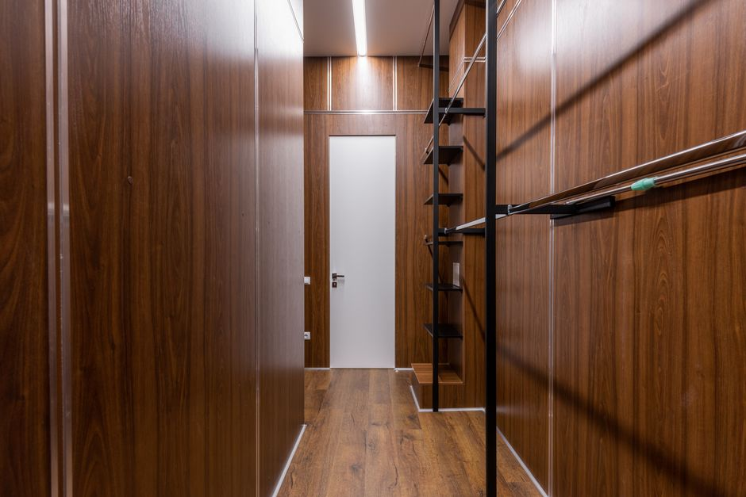

Guide pour installer des étagères murales en hauteur

Photo: Max Vakhtbovych / Pexels
Des étagères murales libèrent du sol dans un petit espace, mais une étagère mal fixée peut tomber et blesser quelqu'un. Voici la méthode de base pour poser des étagères en toute sécurité. En cas de doute, faites appel à un professionnel.
1. Planifiez
Mesurez la hauteur et la profondeur des objets à ranger. Placez les objets lourds (livres, vaisselle) sur des étagères basses ou à hauteur de poitrine, et réservez le haut aux objets légers. Une étagère trop haute devient dangereuse à charger.
2. Identifiez votre mur
La fixation dépend du mur : cloison sèche (placoplâtre), brique, béton ou bois. Les fixations ne sont pas interchangeables. Dans une cloison sèche, fixez de préférence dans les montants en bois ou en métal, repérés avec un détecteur de montants, ou utilisez des chevilles conçues pour cet usage et pour la charge prévue.
3. Vérifiez ce qui passe dans le mur
Avant de percer, vérifiez l'absence de fils électriques et de tuyaux. Un détecteur qui repère les câbles et les conduites aide, mais ne remplace pas la prudence. Évitez de percer au-dessus des prises, des interrupteurs ou près d'une salle de bain. Si vous avez un doute, demandez à un électricien ou à un plombier.
4. Posez
- Marquez les trous avec un niveau, puis percez avec le bon foret.
- Portez des lunettes de protection et un masque contre la poussière.
- Vissez les supports en suivant la notice, en utilisant les vis et chevilles adaptées au mur.
- Vérifiez la solidité en tirant doucement avant de charger l'étagère.
5. Respectez la charge
La charge maximale indiquée par le fabricant correspond à une installation correcte dans le bon mur. Répartissez le poids et ne surchargez jamais.
6. Utilisez une échelle ou un escabeau, pas une chaise
Ne montez pas sur une chaise ou sur un meuble. Utilisez un escabeau stable, sur un sol plat, et demandez à quelqu'un de le tenir si vous travaillez en hauteur.
7. Entretenez
Vérifiez deux fois par an que les vis ne se desserrent pas et que les étagères ne fléchissent pas. Si vous avez des enfants, fixez aussi les grandes bibliothèques au mur.
Produits recommandés
En tant que Partenaire Amazon, je réalise un bénéfice sur les achats remplissant les conditions requises.